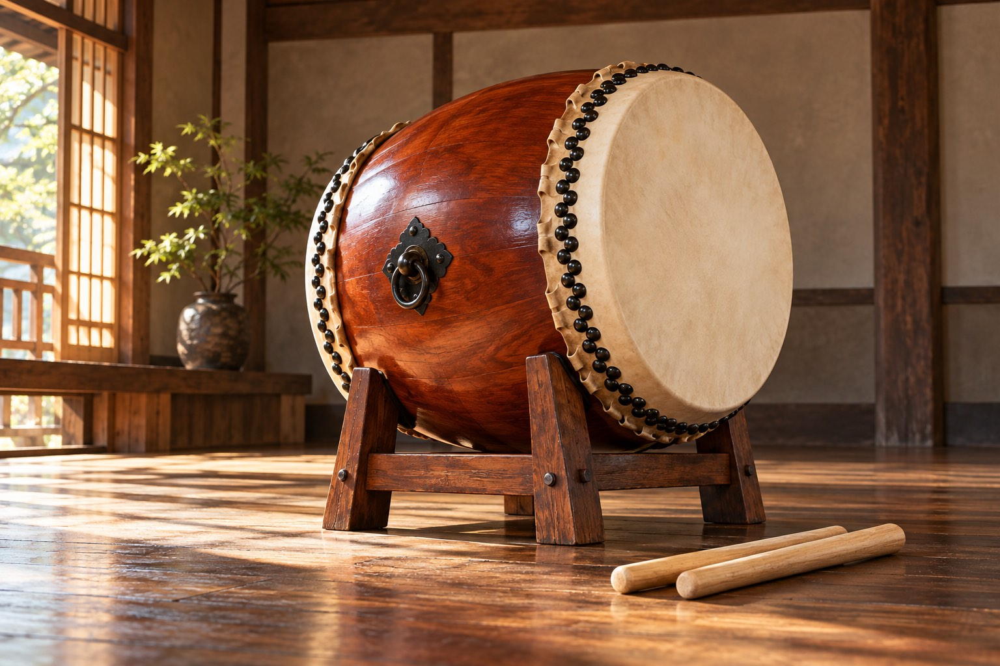

メンバー募集
2026年10月14日の公式記事に募集案内があります。

非公式デザイン見本 · 画像はAI生成イメージ↓参加を考える方は、まず公式記事の募集案内をご確認ください。
2026年10月14日の公式記事に募集案内があります。
公式記事には水曜夜の活動ペースを掲載。最新の予定はご確認ください。
参加の相談と演奏の依頼は、希望する内容を分けてお伝えください。
詳しい内容は、各リンク先の公式ページでご確認ください。
初めてか経験があるか、参加できそうな時期、見学について聞きたいことを整理してご相談ください。見学の可否や会場、現在の受入条件は確認が必要です。
Roy Labによる相談準備の提案です。
この見本には連絡・申込機能はありません。